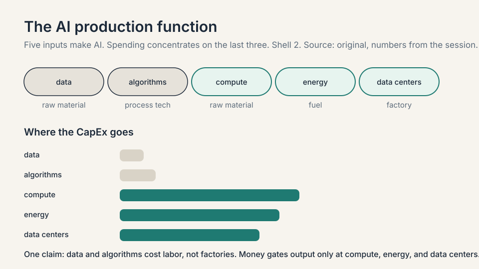
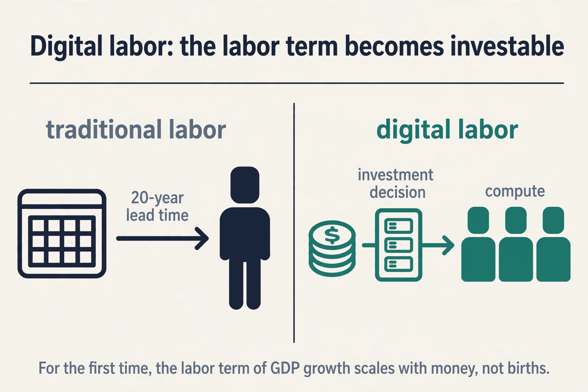

Lecture 1: From Electrons to Tokens
Video blocked (ad-blocker or local file mode).
Watch on YouTubeVideo not loading? Watch on YouTube
Guest: Chase Lochmiller, Co-Founder and CEO of Crusoe. Session covers infrastructure and building AI factories at gigawatt scale.
The chart that opens the course
The first session opens on one chart. It plots the capital expenditure of the five hyperscalers on AI, and the line goes up and to the right, fast. To put the scale in context, the host frames it as one of the largest investments ever made: bigger than the space program, bigger than the interstate highway system, bigger than the Manhattan Project. Second only to the United States defense budget.
The natural question is the one the host puts to the guest: when the hyperscalers spend on the order of $650 billion building data centers, where does that money actually go?
This chapter builds the answer from zero. It starts with what it takes to produce AI at all, then shows why the spending is rational under one economic model, and then follows the money down into the physical stack. The next chapter opens the dollar itself.
Subchapter: the chart, updated to October 2026
The session’s $650B framing is a host’s estimate from spring 2026. What happened next makes the chart steeper, not flatter. Reported 2026 capital expenditure plans: Amazon roughly $200-220 billion, Alphabet $195-205 billion, Meta $115-135 billion, Microsoft roughly $175 billion. Analyst estimates put the combined hyperscaler total for 2026 around $730 billion, nearly triple the 2024 total. The majority is directed at AI data centers, GPU clusters, and custom silicon. In July 2026, US private data-center construction spending hit a $75 billion annualized pace, passing residential homebuilding for the first time in modern records. The thesis from the session held up: the money kept flowing, and it flowed to the same three inputs this chapter identifies.
A later Fortune piece, citing Research Affiliates, added a warning the session did not fully price: hyperscaler AI hardware may become economically obsolete in about three years, not the five to six years companies use on their books. Two thirds of the spend may be replacement, not growth. That critique lands on L02’s depreciation debate, not on this chapter’s thesis.
The AI production function
Before the money, the recipe. The guest, Chase Lochmiller of Crusoe, starts with a plain question: what does it take to produce AI? His answer is an equation with five ingredients.
AI = data + algorithms + compute + energy + data centers data the text, images, and labels models learn from algorithms backpropagation, neural networks, transformers compute GPUs doing parallel tensor math at high speed energy the electricity that runs the GPUs data centers the buildings that house and cool the machines
Read each ingredient the way an economist reads an input to a factory. Data is raw material. Companies like Scale AI buy and label it. the transcript also names Mercor [uncertain: the transcript reads “Merkur”] and Handshake as players in this market. Algorithms are the process technology, invented mostly inside the research labs: new architectures, recursive learning techniques, better ways to use the data. Compute is the machinery: large numbers of GPUs running the same math in parallel. Energy is the fuel. Data centers are the factory buildings.
The striking claim is which ingredients draw the money. Data and algorithms matter, but the guest says the spending concentrates on the last three: compute, energy, and data centers. That is where Crusoe sits, and that is where the CapEx chart is pointing. The rest of this chapter explains why investors believe the return justifies it.

Subchapter: data and algorithms, the unspent inputs
Data and algorithms are real costs, but they do not absorb CapEx at the factory scale. Data labeling is a services business with thin margins and no capacity constraint that gates anything. Algorithms are labor costs inside labs: a few hundred researchers, salaries in the millions, against a $60B-per-gigawatt build. The guest’s point is about marginal bottlenecks: doubling the data budget buys no AI factory. Doubling the energy budget buys a gigawatt of output. Money flows to the inputs that gate output, and those are the last three.
Subchapter: compute, energy, data centers, where the money lands
The last three inputs share one property: each is bought by the megawatt. A megawatt is one million watts of power draw, and it prices everything: the substation, the cooling plant, the rack count. Think of it as the “per seat” of the data center business. L02 prices it exactly: about $20M per MW for the factory, about $40M per MW for the machines inside. The production function is a menu. The megawatt is the unit price.
The growth equation
The guest reaches for a classic economics model to explain the bet. It is called the Cobb-Douglas model of production, and it decomposes the growth of an economy into three additive parts.
GDP growth = change in labor + change in capital + change in technology labor more workers, or more productive hours capital buildings, plants, equipment, invested money technology ideas that make labor more productive
A supercycle is a long wave of investment driven by a general-purpose technology: the PC, the internet, mobile, and now AI. The course site names AI “the biggest technology supercycle since the PC, Internet, and Mobile.” The Cobb-Douglas frame says a supercycle earns its name when it moves one of the three terms hard.
Technology gets most of the press. The guest’s argument is about labor. Historically, the labor term could only change through the birth rate: a 20-year lead time, because a new worker must be born, raised, schooled, fed, and housed before producing anything. Labor was the slow term. Capital could move fast. Labor could not.

Subchapter: the toy version, with numbers
Run the toy. Suppose an economy grows 3 percent a year, split evenly: 1 point from labor, 1 from capital, 1 from technology. The labor point is capped by demography. No investment decision made this quarter changes how many 20-year-olds exist. The term is, for all practical purposes, fixed on any horizon a company plans against.
Now suppose an investment could buy 0.5 points of labor growth the way capital buys 1 point. Total growth moves from 3 percent to 3.5 percent, and the buyer captures the surplus. Compounded over a decade, that half point is the difference between $1.34 and $1.41 on every dollar of GDP, a 5 percent larger economy. The $650 billion is a bid on that half point.
Subchapter: why labor was the slow term
Birth rate is not a dial. Raising a worker costs two decades of food, schooling, and housing before the first productive hour. Immigration moves labor across borders but does not create it. Training changes quality, not headcount. Every lever on the labor term has a lead time measured in years or decades. Capital, by contrast, deploys in quarters: a loan becomes a factory. The guest’s insight is that the asymmetry, not the technology itself, is the opportunity.
Digital labor: the term that became investable
AI breaks the cap. When you hand a task to a coding agent (“build a CRM for my new product”) and it does the work, that is labor being produced. Not a tool assisting a worker. Labor itself, created by buying data centers and GPUs. The guest’s phrase is digital labor: the first labor force in history whose size changes through an investment decision instead of a birth rate.

Subchapter: the mechanism, step by step
Step one: a task exists that a human would do for wages. Step two: an agent does it, consuming tokens. Step three: tokens cost power, chips, and buildings, all bought with capital. The wage becomes a CapEx line. The labor term moves when money moves, on a quarterly horizon, like capital always did.
Subchapter: what it replaces and what it does not
Digital labor substitutes for routine cognitive work: drafting, summarizing, triaging, coding boilerplate. It does not substitute for physical presence, trust relationships, or judgment under ambiguity. The guest’s thesis does not require replacing all labor. It requires replacing enough that the labor term of GDP growth moves. Even a fraction is a first in history.
That is the thesis behind the chart. The $650 billion is not a bet that chatbots are fun. It is a bet that the labor term of the growth equation can now be scaled the way capital always could, and that whoever builds the factories for digital labor captures the return.
Why energy comes first
Here the chapter turns from the thesis to the strategy it implies. If digital labor is the prize, the bottleneck is whatever gates the factories. The guest’s founding insight, from just under a decade of building, was that the scarce resource was energy, not chips.
Subchapter: why the hubs filled first
The reasoning is market logic. Data center capacity had grown steadily through the web 2.0 era, clustering in established hubs. Northern Virginia, which the guest names, runs a large share of the internet. Building “the next data center in Northern Virginia” was a crowded trade: land costs more, permitting queues are long, and power prices reflect competition. Meanwhile the new workloads, AI training with backpropagation and proof-of-work crypto, shared one trait: at scale, they are limited by energy.
Subchapter: the inversion
So Crusoe inverted the usual plan. Instead of moving energy to the computers, move the computers to the energy. Find places with abundant cheap power that are not historical data center markets, and build there.
The worked example is Abilene, Texas, and it deserves the arithmetic. West Texas had attracted heavy renewable investment because production tax credits paid developers to produce clean electrons. The result was overbuild: more generation than the grid could carry out, and no marginal buyer. Power prices went negative. Crusoe signed its first two buildings there in June 2024, and the site is now described as one of the largest AI computing campuses in the world, possibly the largest.

The campus numbers set the scale for the whole course. A 200 MW substation and a 1 GW substation, the latter described as the largest privately owned substation in the United States. One gigawatt is roughly the power draw of the city of Denver, the guest’s home town. The full campus is 2.1 gigawatts in aggregate: two Denvers of power, all feeding computers. Eight buildings serve Oracle and OpenAI, the project known as Project Stargate, plus a 350 MW natural gas plant built to energize the cluster and an expansion planned for Microsoft.
Subchapter: what is used where, October 2026
The energy-first playbook is now the industry’s default strategy. Hyperscalers announce sites by their power first: the Nvidia-SB Energy PORTS-Pike campus in Ohio targets 8 GW of AI compute with at least 10 GW of new power generation, backed by a 20-year lease with OpenAI. Microsoft reported adding a gigawatt of capacity in a single quarter. The pattern repeats the Abilene logic at national scale: secure generation, transmission, and permits before the GPUs arrive, because power is the longest lead-time input.
The moving bottleneck
A common misunderstanding is that the binding constraint in AI is fixed. The guest insists it moves, and the history of the last four years proves it.

Subchapter: chips, four years ago
The first bottleneck was compute itself: getting the chips. Training runs competed for scarce GPUs, and allocation was the strategy. Whoever held the most H100s held the lead.
Subchapter: memory, then
Memory stocks ripped next. High-bandwidth memory and the memory subsystem of the chip package gated how many training clusters could ship. The constraint moved one layer inside the machine.
Subchapter: energized shells, today
Chips have softened as the bottleneck. Access to GPUs is better than it was. The binding constraint today is finding places where you can put the chips and turn them on: powered shells with the electrical and cooling plant ready. A power shell is an energized data center: the building, the substation, the cooling, everything needed so that you can plug in chips and start computing.
Subchapter: labor, always
Underneath every phase, labor. The guest calls the shortage of tradespeople a bottleneck in its own right, with 9,000 people on site at Abilene every day against a town of 120,000. Electricians, welders, plumbers, construction workers: the factories need hands as much as they need electrons.
This is why Crusoe is vertically integrated, meaning it owns multiple layers of the stack instead of one. The company works from energy development at the bottom, through the data center buildings, up to GPU cluster deployment and managed services at the top. When the bottleneck moves, a single-layer company is stuck. a vertically integrated one retools. The guest is explicit about the boundary: not in the chip business, not in the model business. Everything between energy and tokens.
Mapping back: why the money is rational
Each piece of this chapter answers the opening question.
| Opening puzzle | This chapter’s answer |
|---|---|
| Why $650B of CapEx? | Digital labor: the labor term of GDP growth is now investable. The spending buys workers, not just tools. |
| What does AI need? | Five inputs: data, algorithms, compute, energy, data centers. The money concentrates on the last three. |
| Why start from energy? | At scale, energy is the scarce input. Stranded cheap power (Abilene) beats a crowded hub (Northern Virginia). |
| What gates growth? | A moving bottleneck: chips, then memory, now energized shells, always skilled labor. Vertical integration is the hedge. |
| What changed by Oct 2026? | The spend kept rising: ~$730B combined hyperscaler CapEx. Power is now the lead-time input for every site. |
The honest price: the thesis can be wrong
Every investment thesis has a falsifier, and this one is sharp. The entire $650 billion rests on tokens staying valuable: on digital labor actually substituting for human labor at a price that covers the factories. If the demand for tokens stalls, the chart is a monument to overbuild, and the depreciation question in the next chapter becomes an obituary.
The guest names his own long-run risks later in the session: open source models taking share from closed ones, and the legacy electrical stack being disrupted by power electronics. The price of the thesis is that it must be right about demand for a decade. The next chapter checks whether the unit economics give it that decade.
Subchapter: the three-year obsolescence critique
A 2026 Fortune piece, summarizing Research Affiliates research, argues hyperscaler AI hardware becomes economically obsolete in about three years, because each new chip generation delivers sharply better compute-per-watt and data centers face hard power ceilings: old chips must be swapped for new ones to hold capacity. On this view, roughly two thirds of the CapEx is maintenance, replacing dead hardware, not growth. The thesis survives only if token revenue per megawatt stays ahead of the replacement treadmill. That is the race the next chapter prices.
Five inputs make AI: data, algorithms, compute, energy, and data centers. Data is the raw material, algorithms are the process technology, GPUs are the machinery, electricity is the fuel, and data centers are the factory buildings. The guest’s key claim is that the money concentrates on the last three. Data labeling created a real market (Scale AI and others), and algorithms live in the labs, but the CapEx chart is compute, energy, and buildings. Because it tells you where the spending must flow. If AI output scales with compute and energy, then every unit of AI demand converts mechanically into demand for GPUs, power plants, and data centers. The investor question becomes unit economics per megawatt, which is the next chapter.
Cobb-Douglas decomposes GDP growth into three parts: change in labor, change in capital, and change in technology. Historically the labor term moved only through the birth rate, with a 20-year lead time, so it was the slow term. Digital labor breaks that: an agent doing real work is labor produced by an investment decision. For the first time, the labor term can scale the way capital always could, which is the economic case for building AI factories at gigawatt scale. Token demand stalling. If digital labor does not substitute for human labor at prices that cover the factories, the CapEx is overbuild. The guest’s own bear cases point the same way: open source eroding closed-model pricing power would compress the revenue side of the trade.
Split 3 percent annual growth into 1 point from labor, 1 from capital, and 1 from technology. The labor point is fixed by demography on any planning horizon. Now imagine investment could buy half a point of labor growth, the way capital buys its point. Total growth rises from 3 percent to 3.5 percent. Compounded over ten years, $1 grows to $1.34 at 3 percent and $1.41 at 3.5 percent: a 5 percent larger economy. The hyperscaler CapEx is a bid on that half point, not on chatbots. It does not need to be. The toy only needs one fact: the labor term is the one that could not move on an investment horizon. Whatever its share, making it investable is a first in economic history, which is the guest’s whole argument.
At scale, energy was the scarce input, and markets are reasonably efficient everywhere else. The web 2.0 era had already filled the established hubs like Northern Virginia. The new workloads (AI training, proof-of-work) are energy-hungry at scale, so the winning move was to find cheap stranded power and bring the computers to it. Abilene is the worked example: renewable overbuild from production tax credits pushed power prices negative, and Crusoe built one of the world’s largest AI campuses there, now 2.1 gigawatts in aggregate. Stranded power is stranded for a reason: no transmission, no local demand. If the grid buildout catches up or the tax regime changes, the cost advantage narrows. The Abilene answer was to build its own 1 GW substation and a 350 MW gas plant, which converts the risk into more CapEx.
A power shell is an energized data center: the building, the substation, the cooling, everything needed so that you can plug in chips and start computing. Chips themselves have become easier to get. The scarce thing is a place to turn them on. Underneath that, skilled labor binds too: electricians, welders, plumbers, and construction workers, with projects like Abilene putting 9,000 people on site daily in a town of 120,000. Because the bottleneck moves: chips four years ago, memory after that, energized shells today. A company that owns one layer is hostage to whichever layer binds. Crusoe spans energy development, buildings, GPU clusters, and managed services, so it can attack whichever layer is gating growth, while staying out of chips and models.
The spend kept rising. Reported 2026 plans: Amazon roughly $200-220B, Alphabet $195-205B, Meta $115-135B, Microsoft about $175B, roughly $730B combined, nearly triple 2024. US private data-center construction hit a $75B annualized pace in July 2026 and passed homebuilding. The energy-first playbook is now default: the Nvidia-SB Energy PORTS-Pike campus in Ohio targets 8 GW of compute with 10 GW of new power, backed by a 20-year OpenAI lease. The three-year obsolescence argument: if each chip generation’s compute-per-watt gain forces hardware swaps inside a fixed power ceiling, then two thirds of CapEx is maintenance, not growth, and books that depreciate over six years overstate asset life. The thesis then needs token revenue per megawatt to beat the replacement treadmill, which is L02’s race.
Three questions. First, what share of your contracted capacity is token revenue versus chip rental: the thesis needs tokens, not leases. Second, how fast can you turn a power shell, in months from energized to revenue, because the payback math depends on it. Third, what breaks first if token prices fall 50 percent: that is the margin of safety. The first question separates believers from landlords. The third separates the durable from the cyclical.
Recap: the whole lesson on one screen
- The chart. Hyperscaler AI CapEx goes up and to the right, fast. Roughly $650 billion in the session’s framing. about $730 billion in reported 2026 plans by October. Bigger than the space program, the highways, the Manhattan Project.
- The recipe. AI needs data, algorithms, compute, energy, and data centers. The money concentrates on the last three.
- The growth equation. Cobb-Douglas: GDP growth is change in labor plus change in capital plus change in technology.
- The slow term. Labor historically moved only via the birth rate: a 20-year lead time. Fixed on any planning horizon.
- The toy. 3 percent growth split three ways. Buying half a point of labor growth means a 5 percent larger economy in ten years. The CapEx is a bid on that half point.
- Digital labor. Agents doing real work are labor produced by investment. The labor term is now scalable like capital. That is the $650B thesis.
- Energy first. At scale, energy is the scarce input. Move the computers to the cheap power, not the reverse.
- Abilene. Tax credits caused renewable overbuild, prices went negative. Now a 2.1 GW campus: two Denvers of power, 9,000 workers on site, a 1 GW substation.
- The moving bottleneck. Chips, then memory, now energized shells, always skilled labor. Vertical integration is the hedge. Next: the dollar anatomy.
Go deeper
- Building AI Factories (MS&E 435)
- The session this lesson follows, in full.
- MS&E 435 course site
- Hyperscaler AI capex tracker, 2026
- US data-center investment overview, 2026
- The three-year obsolescence argument (Fortune / Research Affiliates, April 2026)
Official sources and further reading
Official: - Building AI Factories (MS&E 435, Spring 2026), guest Chase Lochmiller, Crusoe: link - MS&E 435 course site
Further reading: - The course site’s framing line: AI is “the biggest technology supercycle since the PC, Internet, and Mobile.”
Caveats from these sources. The $650B figure is the host’s framing of hyperscaler spend, not an audited total. The October 2026 capex numbers are analyst and press estimates from company guidance, not audited totals, and ranges differ across sources. The transcript spells the guest’s name “Lockmiller” in places. the course site spells it “Lochmiller,” used here. One data-labeling company is transcribed as “Merkur” [uncertain: likely Mercor]. The Cobb-Douglas treatment is the guest’s intuitive version (growth as a sum of three changes), not the formal multiplicative production function. Abilene “largest campus” is the guest’s claim, stated with hedging.
Connections to the other courses
- CS229S: the systems course prices the same stack from the inside: what the GPUs cost to run, why inference is memory-bound, and what FlashAttention saves. Read it for the engineering behind the dollars here.
- CS336: builds the transformer and the training stack that all this infrastructure exists to serve.
- CS329A / CS329Z: the agents course covers the digital labor itself: what agents can do and where they break.
- MS&E435 L02: opens the $60M megawatt and checks whether the unit economics pay back.